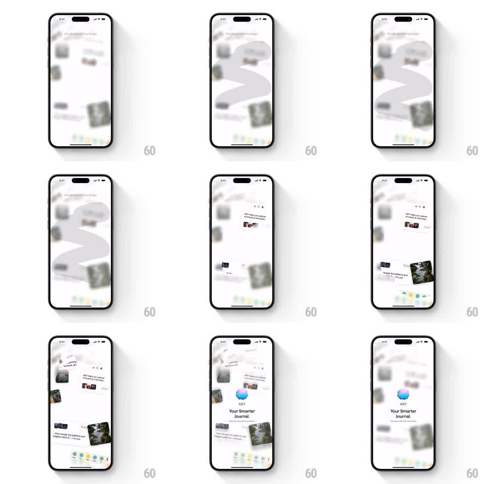

Media
Frame-by-frame

Rebuild this interaction 1:1: ABY's scratch-to-reveal splash - the screen is covered in a frosted blur that the finger scratches away in strokes, revealing onboarding cards that cascade into place.

Rebuild this interaction 1:1: ABY's scratch-to-reveal splash - the screen is covered in a frosted blur that the finger scratches away in strokes, revealing onboarding cards that cascade into place. ## Integration Integration: stack-agnostic spec - springs given as stiffness/damping, timed motions as duration + curve; map every value to your framework and animation library of choice. ## Scene An onboarding collage (photo cards, text cards, a color-dot palette row) hidden under a frosted blur layer. The hint "Scratched to begin" sits at top. Scratching erases the blur in soft strokes; when enough is cleared, the blur dissolves and the collage cards stagger into their final positions, ending on the ABY orb logo with "Your Smarter Journal." ## Motion spec Pattern: scratch reveal then card cascade, gesture-driven, ~1.5s cascade. - The blur layer erases along the touch path: a soft-edged brush (radius 40px) clears the frost with a feathered edge, revealing the sharp card beneath in real time. - Scratched strokes persist - the clear path accumulates. - At 60% cleared, the remaining blur dissolves (400ms) and the cards animate to their final layout: each slides and rotates into place (spring stiffness 300 damping 18, 70ms stagger) from a slightly scattered arrangement. - The logo orb pops in last at center (scale 0.6 to 1, stiffness 380 damping 15) with the tagline fading up beneath it. ## Calibration - The brush feather is wide - scratched edges are soft, not hard eraser cuts. - The cascade reads as settling, not assembling: cards start near their final spots, only a few pixels and degrees off. ## Reduced motion Blur fades out; cards fade in placed. ## Don't miss - The hint text stays visible over the blur until the dissolve. - The color-dot row is part of the collage, revealed by scratching like everything else.